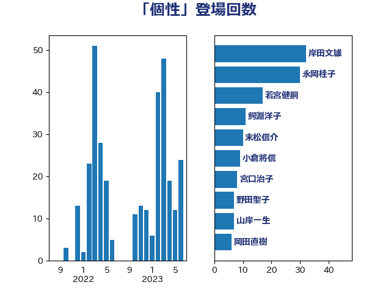

単語「個性」

| 岸田文雄 | 自由民主党 | 20 回 |
| 萩生田光一 | 自由民主党 | 18 回 |
| 若宮健嗣 | 自由民主党 | 17 回 |
| 末松信介 | 自由民主党 | 10 回 |
| 坂本哲志 | 自由民主党 | 9 回 |
| 菅義偉 | 自由民主党 | 9 回 |
| 野田聖子 | 自由民主党 | 7 回 |
| 高木かおり | 日本維新の会 | 6 回 |
| 水岡俊一 | 立憲民主党 | 5 回 |
| 宮口治子 | 立憲民主党 | 4 回 |
| 櫻井周 | 立憲民主党 | 4 回 |
| 上川陽子 | 自由民主党 | 3 回 |
| 上月良祐 | 自由民主党 | 3 回 |
| 伊藤孝江 | 公明党 | 3 回 |
| 吉川元 | 立憲民主党 | 3 回 |
| 吉良よし子 | 日本共産党 | 3 回 |
| 宮路拓馬 | 自由民主党 | 3 回 |
| 山田勝彦 | 立憲民主党 | 3 回 |
| 川田龍平 | 立憲民主党 | 3 回 |
| 後藤茂之 | 自由民主党 | 3 回 |
| 須藤元気 | 無所属 | 3 回 |
| 平井卓也 | 自由民主党 | 2 回 |
| 横沢高徳 | 立憲民主党 | 2 回 |
| 浮島智子 | 公明党 | 2 回 |
| 稲津久 | 公明党 | 2 回 |
| 鎌田さゆり | 立憲民主党 | 2 回 |
| 高階恵美子 | 自由民主党 | 2 回 |
| 仁木博文 | 無所属 | 1 回 |
| 住吉寛紀 | 日本維新の会 | 1 回 |
| 佐々木さやか | 公明党 | 1 回 |
| 加藤勝信 | 自由民主党 | 1 回 |
| 古川禎久 | 自由民主党 | 1 回 |
| 吉川ゆうみ | 自由民主党 | 1 回 |
| 吉川沙織 | 立憲民主党 | 1 回 |
| 吉良州司 | 無所属 | 1 回 |
| 嘉田由紀子 | 無所属 | 1 回 |
| 國重徹 | 公明党 | 1 回 |
| 大島敦 | 立憲民主党 | 1 回 |
| 宗清皇一 | 自由民主党 | 1 回 |
| 宮本岳志 | 日本共産党 | 1 回 |
| 山本博司 | 公明党 | 1 回 |
| 山本左近 | 自由民主党 | 1 回 |
| 岩渕友 | 日本共産党 | 1 回 |
| 掘井健智 | 日本維新の会 | 1 回 |
| 日下正喜 | 公明党 | 1 回 |
| 本村伸子 | 日本共産党 | 1 回 |
| 杉久武 | 公明党 | 1 回 |
| 松山政司 | 自由民主党 | 1 回 |
| 松島みどり | 自由民主党 | 1 回 |
| 松沢成文 | 日本維新の会 | 1 回 |
| 松野博一 | 自由民主党 | 1 回 |
| 柳ヶ瀬裕文 | 日本維新の会 | 1 回 |
| 柳本顕 | 自由民主党 | 1 回 |
| 浅川義治 | 日本維新の会 | 1 回 |
| 片山さつき | 自由民主党 | 1 回 |
| 田村まみ | 国民民主党 | 1 回 |
| 田村智子 | 日本共産党 | 1 回 |
| 矢倉克夫 | 公明党 | 1 回 |
| 石川博崇 | 公明党 | 1 回 |
| 舩後靖彦 | れいわ新選組 | 1 回 |
| 蓮舫 | 立憲民主党 | 1 回 |
| 藤岡隆雄 | 立憲民主党 | 1 回 |
| 藤巻健太 | 日本維新の会 | 1 回 |
| 西村康稔 | 自由民主党 | 1 回 |
| 谷川とむ | 自由民主党 | 1 回 |
| 赤羽一嘉 | 公明党 | 1 回 |
| 進藤金日子 | 自由民主党 | 1 回 |
| 酒井庸行 | 自由民主党 | 1 回 |
| 鈴木庸介 | 立憲民主党 | 1 回 |
| 高橋光男 | 公明党 | 1 回 |